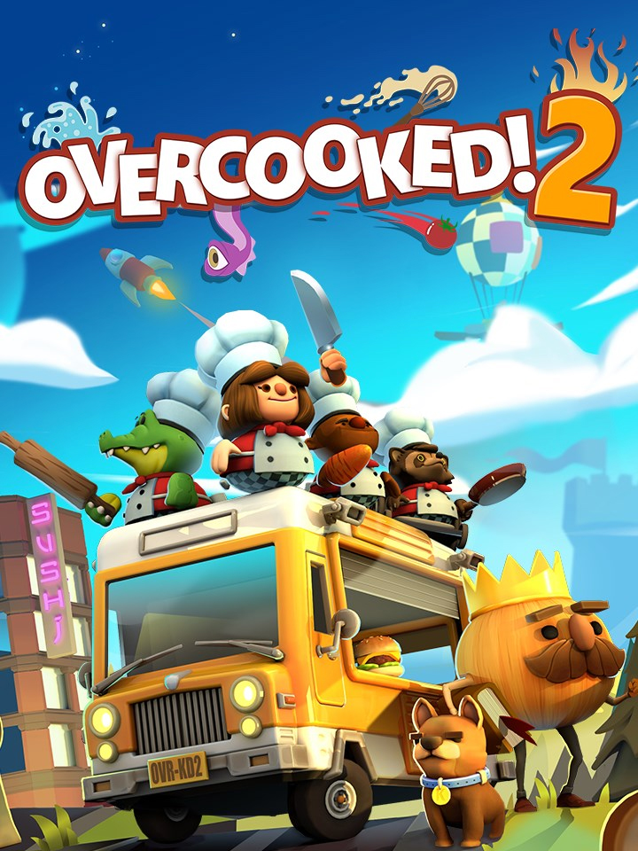

Overcooked! 2
Details
|  | |
| Playtime | Not Played |
| Last Activity | Never |
| Added | 20/12/2024 16:41:22 |
| Modified | 18/05/2025 0:16:52 |
| Completion Status | Not Played |
| Library | Gog |
| Source | GOG |
| Platform | PC (Windows) |
| Release Date | 07/08/2018 |
| Community Score | 80 |
| Critic Score | 80 |
| User Score | |
| Genre | Arcade Indie Simulator Strategy Tactical |
| Developer | Ghost Town Games |
| Publisher | Team17 |
| Feature | Co-Operative Multiplayer Single Player Split Screen |
| Links | Twitter Official GOG Epic Discord Steam Twitch |
| Tag | Action Amazon Luna Casual Comedy Cooking Difficult Family Friendly Funny Great Soundtrack Local Co-Op Local Multiplayer Multiplayer Simulation |
Description
Overcooked returns with a brand-new helping of chaotic cooking action! Journey back to the Onion Kingdom and assemble your team of chefs in classic couch co-op or online play for up to four players. Hold onto your aprons … it’s time to save the world (again!)
Out of the frying pan, into the fire…
You’ve saved the world from the Ever Peckish. Now a new threat has arisen and it’s time to get back in the kitchen to stave off the hunger of The Unbread!


Out of the frying pan, into the fire…
You’ve saved the world from the Ever Peckish. Now a new threat has arisen and it’s time to get back in the kitchen to stave off the hunger of The Unbread!
ONLINE/LOCAL MULTIPLAYER MADNESS
You’ll knead to work together (or against each other) to get the highest score in chaotic local and online multiplayer.FEAST YOUR EYES ON THIS
Journey across a brand new overworld map by land, sea and air. Get cooking in new themes ranging from sushi restaurants, magic schools, mines and even alien planets!WHET YOUR APPETITE!
Travel the land cooking up a range of new recipes that are sure to cater to any tastes, including sushi, cakes, burgers and pizzas.ROMAINE CALM!
Travel through teleporters, across moving platforms and save time by throwing ingredients across dynamic kitchens that shift and evolve. Some kitchens even whisk your chefs away to new locations.